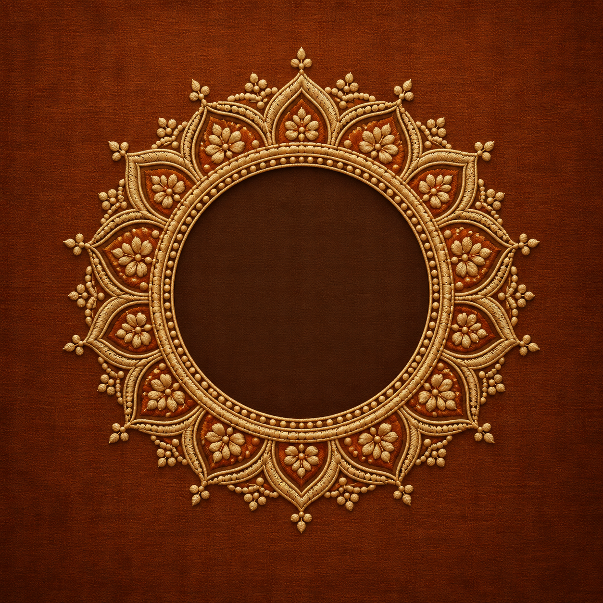
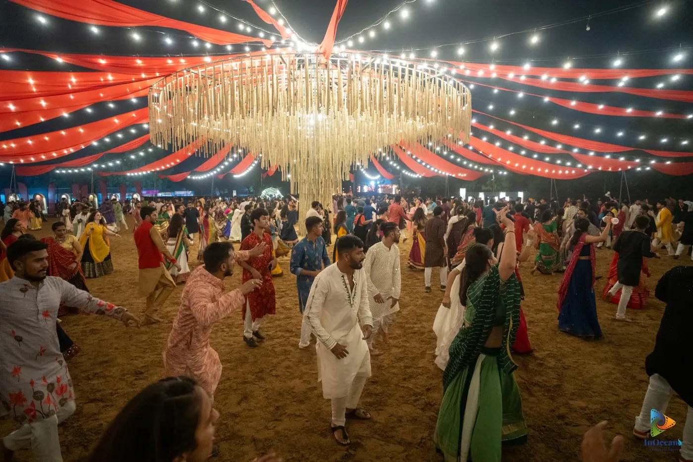

The circle is calling.
Through a golden gateway, a celebration awaits.

Divi Garba 2026
The circle awaits · Navratri 2026
Ten nights.
One timeless circle.
Garba, dhol, devotion and togetherness.
Come for the rhythm. Stay for the feeling.

MUSIC · MOVEMENT · TOGETHERNESS
Through a golden gateway, a celebration awaits.
પરંપરાના મૂળ · Rooted in tradition
A lamp at the centre. Music in the air. A circle that brings everyone together.
Bring your people. Find your place in the circle.
સાંજથી પરોઢ
The nights
Moments from the circle.
Your nights at Divi · ચાલો, ગરબે રમીએ
Until the first beat
11–20 October 2026 · From 8:00 PM IST
Choose a night to plan with your friends.
Planning a night does not reserve entry. Use Book ticket to check passes with the ticket provider.
Dress Code — Traditional attire encouraged; must respect cultural values.
Timing & Entry — Gates open at 8:00 PM; last entry at 2:00 AM. No re-entry allowed.
Entry & Passes — Valid event pass required. Non-transferable. QR codes valid for single scan only.
Couple Pass — One male and one female are mandatory on a Couple Pass. 2 male or 2 female are not allowed on couple entry.
Refunds — Passes are non-refundable; rescheduling policy applies for cancellations.